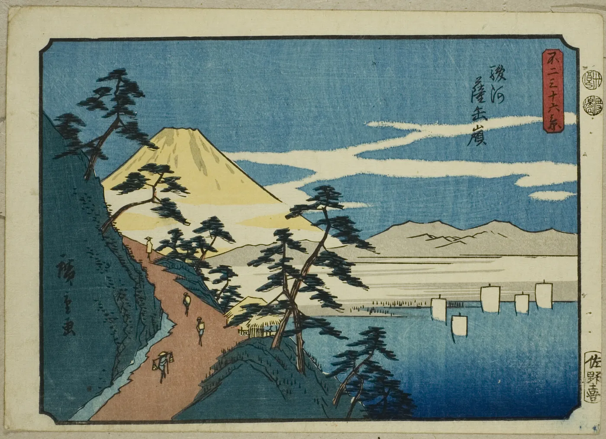
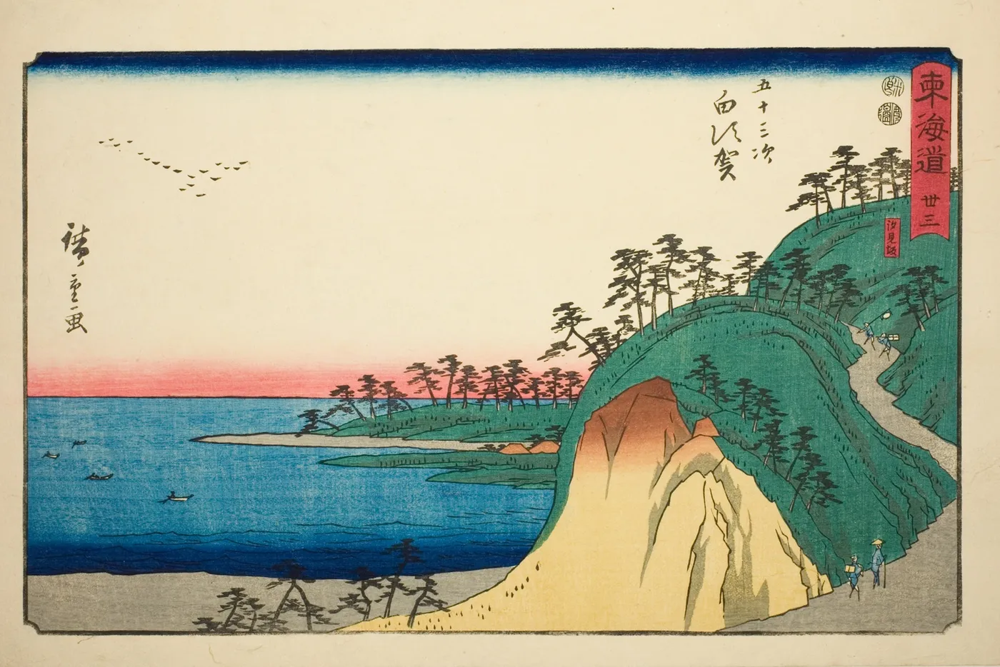
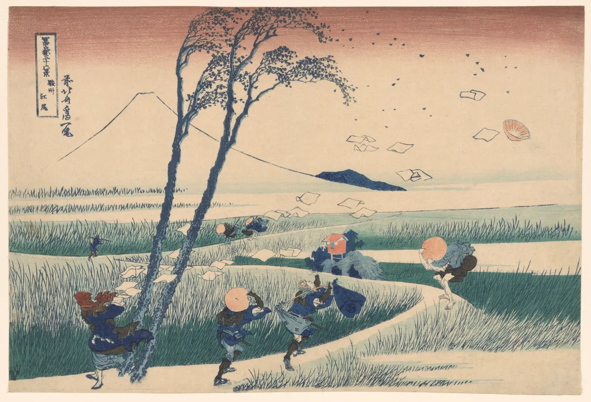
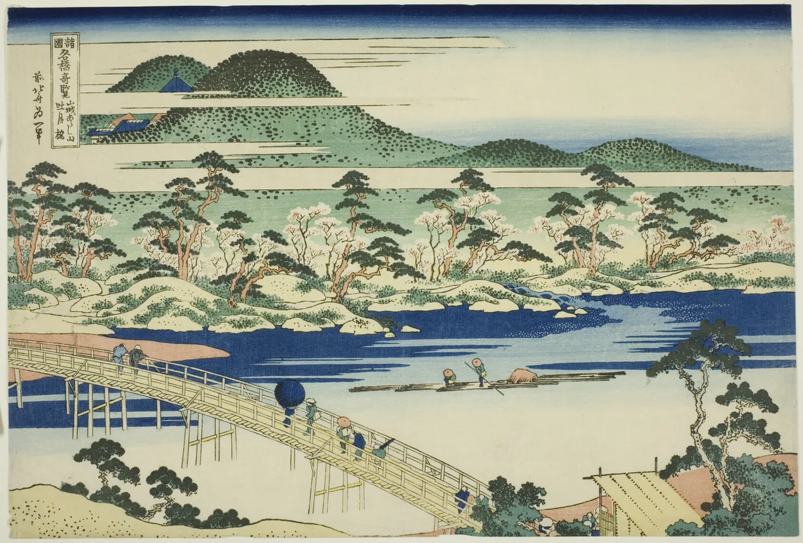
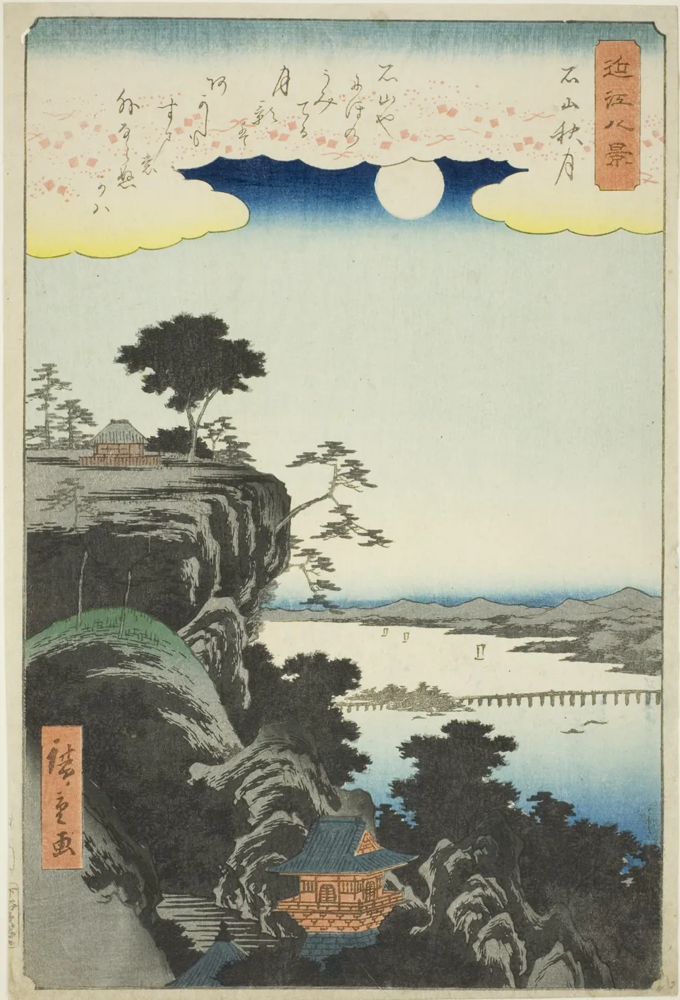
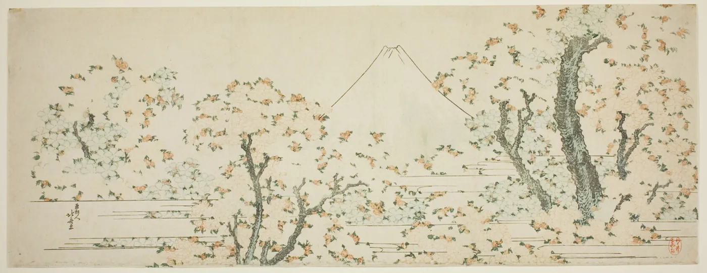
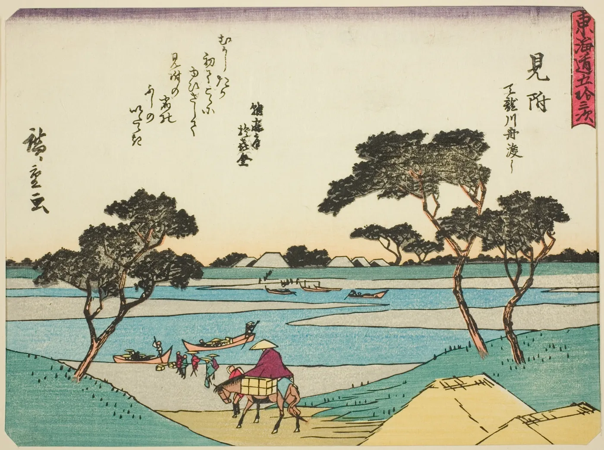

<title>Antimony, Nurture</title>
<meta name="claude:viewport-fit-sides" content="cover">
<style>
/* Warm washi ground, Hiroshige's skies seen through the mark, and one thing always done by hand: the gold, coloured in with a jagged pencil. */
@font-face { font-family: "Timeless Serif"; src: url(fonts/TimelessSerifVF.woff2) format("woff2"); font-weight: 200 700; font-display: swap; }
@font-face { font-family: "Timeless Serif"; src: url(fonts/TimelessSerifItalicVF.woff2) format("woff2"); font-weight: 200 700; font-style: italic; font-display: swap; }
@font-face { font-family: "Timeless Sans"; src: url(fonts/timeless-sans-400.woff2) format("woff2"); font-weight: 400; font-display: swap; }
@font-face { font-family: "Commit Mono"; src: url(fonts/CommitMono-Latin-VF.woff2) format("woff2"); font-weight: 200 700; font-display: swap; }
:root { --sky: #9CCBEA; --prussian: #1F3F7A; --field: #8DBF6A; --pine: #2F5D50; --sun: #F4C84A; --dawn: #F2B6A0; --washi: #F3ECDD; --ink: #1A1D1C; --rule: rgba(31,63,122,.16); --dim: #5E6A73; color-scheme: light;
  --serif: "Timeless Serif", "Iowan Old Style", Georgia, serif; --sans: "Timeless Sans", "Helvetica Neue", Arial, sans-serif; --mono: "Commit Mono", ui-monospace, Menlo, monospace; }
* { box-sizing: border-box; margin: 0; }
html, body { background: var(--washi); color: var(--ink); }
body { font: 400 16px/1.6 var(--sans); -webkit-font-smoothing: antialiased; }
a { color: var(--prussian); }
.band { padding-left: max(16px, env(safe-area-inset-left, 0px)); padding-right: max(16px, env(safe-area-inset-right, 0px)); padding-block: 72px; }
.band + .band { border-top: 1px solid var(--rule); }
.in { max-width: 1120px; margin-inline: auto; display: grid; gap: 30px; }
.eyebrow { font: 500 11.5px/1 var(--mono); letter-spacing: .08em; text-transform: uppercase; color: var(--dim); }
h1 { font: 400 clamp(44px, 7.4vw, 104px)/.98 var(--serif); letter-spacing: -.022em; color: var(--prussian); text-wrap: balance; }
h2 { font: 400 clamp(32px, 4.2vw, 52px)/1.04 var(--serif); letter-spacing: -.014em; color: var(--prussian); text-wrap: balance; max-width: 17em; }
p { max-width: 37em; } .dim { color: var(--dim); }
.lede { font: 400 clamp(19px, 2vw, 23px)/1.5 var(--serif); max-width: 32em; }
.hero { display: grid; grid-template-columns: minmax(0, 1fr) minmax(0, 1.05fr); gap: 56px; align-items: center; padding-top: 24px; }
.top { display: flex; justify-content: space-between; align-items: center; }
.top svg { height: 26px; width: auto; display: block; }
.win { position: relative; aspect-ratio: 1; width: 100%; max-width: 100%; cursor: pointer; }
.win .gl { position: absolute; inset: 0; width: 100%; height: 100%; -webkit-mask: url("data:image/svg+xml,%3Csvg%20xmlns%3D%22http%3A//www.w3.org/2000/svg%22%20viewBox%3D%22-1.5%20-1.5%20103%20103%22%3E%3Cpath%20d%3D%22M6.7%2066L6.7%2025L42.21%204.5Z%22%20fill%3D%22%23000%22/%3E%3Cpath%20d%3D%22M57.79%204.5L93.3%2025L93.3%2066Z%22%20fill%3D%22%23000%22/%3E%3Cpath%20d%3D%22M89.4%2077.25L50%20100L10.6%2077.25L20.38%2060.3L79.62%2060.3Z%22%20fill%3D%22%23000%22/%3E%3C/svg%3E") center / 100% 100% no-repeat; mask: url("data:image/svg+xml,%3Csvg%20xmlns%3D%22http%3A//www.w3.org/2000/svg%22%20viewBox%3D%22-1.5%20-1.5%20103%20103%22%3E%3Cpath%20d%3D%22M6.7%2066L6.7%2025L42.21%204.5Z%22%20fill%3D%22%23000%22/%3E%3Cpath%20d%3D%22M57.79%204.5L93.3%2025L93.3%2066Z%22%20fill%3D%22%23000%22/%3E%3Cpath%20d%3D%22M89.4%2077.25L50%20100L10.6%2077.25L20.38%2060.3L79.62%2060.3Z%22%20fill%3D%22%23000%22/%3E%3C/svg%3E") center / 100% 100% no-repeat; }
.win .pencil { position: absolute; inset: 0; width: 100%; height: 100%; image-rendering: pixelated; image-rendering: crisp-edges; }
.win .edge { position: absolute; inset: 0; width: 100%; height: 100%; pointer-events: none; }
.hint { font: 500 11px var(--mono); letter-spacing: .06em; text-transform: uppercase; color: var(--dim); }
.two { display: grid; grid-template-columns: minmax(0, 1fr) minmax(0, 1fr); gap: 40px; align-items: center; }
.pal { display: grid; grid-template-columns: repeat(4, minmax(0, 1fr)); gap: 12px; }
.sw { min-height: 150px; padding: 14px; display: grid; align-content: end; gap: 2px; border-radius: 2px; }
.sw b { font: 400 24px/1.1 var(--serif); } .sw span { font: 400 12px var(--mono); opacity: .85; } .sw i { font: italic 400 14px/1.3 var(--serif); opacity: .85; }
.prints { display: grid; grid-template-columns: repeat(4, minmax(0, 1fr)); gap: 14px; }
.prints img { width: 100%; aspect-ratio: 4 / 3; object-fit: cover; display: block; border-radius: 2px; max-width: 100%; }
.credits { columns: 2; column-gap: 40px; font-size: 13.5px; color: var(--dim); padding-left: 1.1em; }
.credits li { break-inside: avoid; margin-bottom: 6px; }
.ban { position: relative; aspect-ratio: 1584 / 396; max-width: 100%; overflow: hidden; border-radius: 4px; }
.ban img { width: 100%; height: 100%; object-fit: cover; object-position: 50% 40%; display: block; }
.ban .lab { position: absolute; right: 3.4%; bottom: 10%; background: var(--washi); padding: 2.2% 2.6%; display: grid; gap: 6px; border-radius: 2px; }
.ban .lab svg { height: clamp(16px, 2.6vw, 30px); width: auto; display: block; }
.ban .lab span { font: italic 400 clamp(12px, 1.5vw, 18px)/1.2 var(--serif); color: var(--prussian); }
.posts { display: grid; grid-template-columns: repeat(3, minmax(0, 1fr)); gap: 16px; }
.post { aspect-ratio: 4 / 5; max-width: 100%; display: grid; place-items: center; padding: 14%; border-radius: 2px; position: relative; }
.post .cap { position: absolute; left: 8%; bottom: 6%; right: 8%; font: italic 400 15px/1.3 var(--serif); color: var(--prussian); }
.say { font: italic 400 clamp(24px, 3.2vw, 40px)/1.3 var(--serif); color: var(--prussian); max-width: 22em; }
@media (max-width: 860px) { .hero, .two { grid-template-columns: 1fr; gap: 32px; } .pal, .prints { grid-template-columns: 1fr 1fr; } .posts { grid-template-columns: 1fr; } .credits { columns: 1; } .band { padding-block: 52px; } }
</style>

<section class="band"><div class="in">
  <div class="top"><svg viewBox="-10 195 4385.0 995" style="" role="img" aria-label="Antimony"><path d="M111.0 835 352.0 235H388.0L630.0 835Q641.0 862 653.5 876.0Q666.0 890 682.5 896.5Q699.0 903 726.0 906V930H457.0V906Q495.0 903 509.5 894.5Q524.0 886 524.0 872.0Q524.0 858 515.0 834L462.0 696H207.0L155.0 834Q146.0 858 149.5 872.5Q153.0 887 171.5 895.0Q190.0 903 229.0 906V930H15.0V906Q40.0 904 56.0 898.0Q72.0 892 86.0 877.5Q100.0 863 111.0 835ZM448.0 658 336.0 371 222.0 658ZM822.984375 546 912.984375 523Q940.984375 479 981.984375 449.5Q1022.984375 420 1078.984375 420Q1140.984375 420 1179.984375 458.0Q1218.984375 496 1218.984375 566V850H1128.984375V597Q1128.984375 544 1104.484375 516.5Q1079.984375 489 1035.984375 489Q999.984375 489 968.984375 506.5Q937.984375 524 912.984375 555V850H822.984375ZM822.984375 837H912.984375Q912.984375 860 919.484375 874.5Q925.984375 889 940.984375 896.5Q955.984375 904 984.984375 907V930H751.984375V907Q779.984375 904 794.984375 896.5Q809.984375 889 816.484375 874.5Q822.984375 860 822.984375 837ZM1128.984375 837H1218.984375Q1218.984375 860 1225.484375 874.5Q1231.984375 889 1246.984375 896.5Q1261.984375 904 1289.984375 907V930H1057.984375V907Q1085.984375 904 1100.984375 896.5Q1115.984375 889 1122.484375 874.5Q1128.984375 860 1128.984375 837ZM761.984375 488V469L899.984375 420H912.984375V581H822.984375Q822.984375 543 819.984375 526.0Q816.984375 509 804.484375 500.0Q791.984375 491 761.984375 488ZM1377.984375 807V475H1303.984375V457V453Q1361.984375 439 1392.984375 401.0Q1423.984375 363 1440.984375 299H1466.984375V430H1611.984375V475H1466.984375V792Q1466.984375 835 1485.984375 856.5Q1504.984375 878 1538.984375 878Q1559.984375 878 1575.484375 869.0Q1590.984375 860 1603.984375 847L1618.984375 852Q1606.984375 886 1576.984375 912.5Q1546.984375 939 1495.984375 939Q1440.984375 939 1409.484375 906.0Q1377.984375 873 1377.984375 807ZM1727.984375 572H1817.984375V850H1727.984375ZM1727.984375 837H1817.984375Q1817.984375 860 1824.484375 874.5Q1830.984375 889 1845.984375 896.5Q1860.984375 904 1888.984375 907V930H1656.984375V907Q1684.984375 904 1699.984375 896.5Q1714.984375 889 1721.484375 874.5Q1727.984375 860 1727.984375 837ZM1666.984375 485V466L1803.984375 417H1817.984375V578H1727.984375Q1727.984375 540 1724.984375 523.0Q1721.984375 506 1709.484375 497.5Q1696.984375 489 1666.984375 485ZM2001.984375 568 2091.984375 517Q2125.984375 472 2165.984375 446.0Q2205.984375 420 2256.984375 420Q2303.984375 420 2338.484375 445.5Q2372.984375 471 2381.984375 512Q2416.984375 468 2455.984375 444.0Q2494.984375 420 2544.984375 420Q2606.984375 420 2642.984375 456.0Q2678.984375 492 2678.984375 562V834H2588.984375V579Q2588.984375 534 2565.484375 510.5Q2541.984375 487 2499.984375 487Q2468.984375 487 2439.484375 500.0Q2409.984375 513 2385.984375 540V834H2295.984375V586Q2295.984375 537 2273.984375 512.0Q2251.984375 487 2211.984375 487Q2180.984375 487 2149.484375 503.5Q2117.984375 520 2091.984375 551V834H2001.984375ZM2001.984375 834H2091.984375Q2091.984375 869 2106.984375 885.5Q2121.984375 902 2159.984375 907V930H1930.984375V907Q1969.984375 902 1985.984375 885.0Q2001.984375 868 2001.984375 834ZM2295.984375 834H2385.984375Q2385.984375 869 2400.984375 885.5Q2415.984375 902 2453.984375 907V930H2226.984375V907Q2264.984375 902 2280.484375 885.5Q2295.984375 869 2295.984375 834ZM1940.984375 488V469L2078.984375 420H2091.984375V581H2001.984375Q2001.984375 543 1998.984375 526.0Q1995.984375 509 1983.484375 500.0Q1970.984375 491 1940.984375 488ZM2588.984375 834H2678.984375Q2678.984375 868 2695.484375 885.0Q2711.984375 902 2749.984375 907V930H2520.984375V907Q2558.984375 902 2573.984375 885.5Q2588.984375 869 2588.984375 834ZM2779.984375 679Q2779.984375 600 2814.484375 542.0Q2848.984375 484 2904.484375 453.5Q2959.984375 423 3022.984375 423Q3086.984375 423 3142.984375 453.5Q3198.984375 484 3233.484375 542.0Q3267.984375 600 3267.984375 679Q3267.984375 757 3233.484375 816.0Q3198.984375 875 3142.984375 906.0Q3086.984375 937 3022.984375 937Q2960.984375 937 2904.484375 906.0Q2847.984375 875 2813.984375 816.0Q2779.984375 757 2779.984375 679ZM3160.984375 679Q3160.984375 580 3126.984375 518.0Q3092.984375 456 3022.984375 456Q2953.984375 456 2919.984375 517.5Q2885.984375 579 2885.984375 679Q2885.984375 779 2920.484375 841.5Q2954.984375 904 3023.984375 904Q3091.984375 904 3126.484375 841.0Q3160.984375 778 3160.984375 679ZM3390.984375 546 3480.984375 523Q3508.984375 479 3549.984375 449.5Q3590.984375 420 3646.984375 420Q3708.984375 420 3747.984375 458.0Q3786.984375 496 3786.984375 566V850H3696.984375V597Q3696.984375 544 3672.484375 516.5Q3647.984375 489 3603.984375 489Q3567.984375 489 3536.984375 506.5Q3505.984375 524 3480.984375 555V850H3390.984375ZM3390.984375 837H3480.984375Q3480.984375 860 3487.484375 874.5Q3493.984375 889 3508.984375 896.5Q3523.984375 904 3552.984375 907V930H3319.984375V907Q3347.984375 904 3362.984375 896.5Q3377.984375 889 3384.484375 874.5Q3390.984375 860 3390.984375 837ZM3696.984375 837H3786.984375Q3786.984375 860 3793.484375 874.5Q3799.984375 889 3814.984375 896.5Q3829.984375 904 3857.984375 907V930H3625.984375V907Q3653.984375 904 3668.984375 896.5Q3683.984375 889 3690.484375 874.5Q3696.984375 860 3696.984375 837ZM3329.984375 488V469L3467.984375 420H3480.984375V581H3390.984375Q3390.984375 543 3387.984375 526.0Q3384.984375 509 3372.484375 500.0Q3359.984375 491 3329.984375 488ZM3855.984375 453V430H4087.984375V453Q4043.984375 455 4030.484375 466.0Q4016.984375 477 4026.984375 503L4139.984375 812L4254.984375 513Q4261.984375 493 4259.984375 481.5Q4257.984375 470 4243.484375 462.5Q4228.984375 455 4197.984375 453V430H4358.984375V453Q4334.984375 455 4324.484375 460.0Q4313.984375 465 4307.984375 475.0Q4301.984375 485 4291.984375 510L4093.984375 1023Q4069.984375 1088 4037.484375 1117.0Q4004.984375 1146 3963.984375 1148Q3920.984375 1149 3893.984375 1130.0Q3866.984375 1111 3864.984375 1077Q3863.984375 1053 3877.484375 1037.5Q3890.984375 1022 3913.984375 1021Q3929.984375 1021 3938.984375 1028.5Q3947.984375 1036 3956.984375 1052Q3966.984375 1069 3975.984375 1077.0Q3984.984375 1085 4002.984375 1085Q4016.984375 1084 4035.984375 1062.0Q4054.984375 1040 4067.984375 1004L4091.984375 937L3921.984375 506Q3912.984375 484 3907.984375 475.0Q3902.984375 466 3891.484375 460.5Q3879.984375 455 3855.984375 453Z" fill="#1F3F7A"/><path d="M1765.48 171.38L1851.76 307.81L1679.2 307.81Z" fill="#F4C84A"/></svg><span class="hint">Tap a window to colour it in again</span></div>
  <div class="hero">
    <div style="display:grid;gap:26px"><h1>for the people who make the work.</h1>
    <p class="lede">Antimony was used to refine gold: it took away everything that was not gold, and the gold was left. We make software that takes away the work around the work, so what is left is yours.</p></div>
    <div class="win hero" data-plates="img/87008.webp,img/18307.webp,img/24800.webp,img/3652.webp,img/19006.webp,img/18972.webp,img/81248.webp,img/4368.webp" data-delay="0"><canvas class="gl" aria-hidden="true"></canvas><canvas class="pencil" width="206" height="206" aria-hidden="true"></canvas><svg class="edge" viewBox="-1.5 -1.5 103 103" aria-hidden="true"><path d="M6.7 66L6.7 25L42.21 4.5Z" fill="none" stroke="#1F3F7A" stroke-width=".5" stroke-linejoin="round"/><path d="M57.79 4.5L93.3 25L93.3 66Z" fill="none" stroke="#1F3F7A" stroke-width=".5" stroke-linejoin="round"/><path d="M89.4 77.25L50 100L10.6 77.25L20.38 60.3L79.62 60.3Z" fill="none" stroke="#1F3F7A" stroke-width=".5" stroke-linejoin="round"/></svg></div>
  </div>
</div></section>

<section class="band"><div class="in">
  <span class="eyebrow">The idea</span>
  <h2>Nature seen through a window. The gold, coloured in by hand.</h2>
  <div class="two">
    <div style="display:grid;gap:16px">
      <p>The mark is a crystal with an A struck through it. Here it is a window: through its pieces you see the roads, bays and mountains of Hiroshige and Hokusai, two hundred years old and as calm as the day they were cut.</p>
      <p>The one piece that is not a window is the gold. It is never printed flat. It is coloured in, live, with a jagged pencil, a little outside the lines, every time. Making things is messy; the mark says so.</p>
    </div>
    <div class="win b" data-plates="img/18972.webp,img/81248.webp,img/3652.webp" data-delay="1"><canvas class="gl" aria-hidden="true"></canvas><canvas class="pencil" width="206" height="206" aria-hidden="true"></canvas><svg class="edge" viewBox="-1.5 -1.5 103 103" aria-hidden="true"><path d="M6.7 66L6.7 25L42.21 4.5Z" fill="none" stroke="#1F3F7A" stroke-width=".5" stroke-linejoin="round"/><path d="M57.79 4.5L93.3 25L93.3 66Z" fill="none" stroke="#1F3F7A" stroke-width=".5" stroke-linejoin="round"/><path d="M89.4 77.25L50 100L10.6 77.25L20.38 60.3L79.62 60.3Z" fill="none" stroke="#1F3F7A" stroke-width=".5" stroke-linejoin="round"/></svg></div>
  </div>
</div></section>

<section class="band"><div class="in">
  <span class="eyebrow">Colour</span>
  <h2>Taken from the prints, then let out into the light.</h2>
  <div class="pal"><div class="sw" style="background:#9CCBEA;color:#1A1D1C"><b>Sky</b><span>#9CCBEA</span><i>a clear day</i></div><div class="sw" style="background:#1F3F7A;color:#F3ECDD"><b>Prussian</b><span>#1F3F7A</span><i>Hiroshige's blue, the pigment that came by ship</i></div><div class="sw" style="background:#8DBF6A;color:#1A1D1C"><b>Field</b><span>#8DBF6A</span><i>grass in the sun</i></div><div class="sw" style="background:#2F5D50;color:#F3ECDD"><b>Pine</b><span>#2F5D50</span><i>the trees on every road</i></div><div class="sw" style="background:#F4C84A;color:#1A1D1C"><b>Sun</b><span>#F4C84A</span><i>the gold, always coloured in by hand</i></div><div class="sw" style="background:#F2B6A0;color:#1A1D1C"><b>Dawn</b><span>#F2B6A0</span><i>the pink at the edge of a print's sky</i></div><div class="sw" style="background:#F3ECDD;color:#1A1D1C"><b>Washi</b><span>#F3ECDD</span><i>the paper everything is printed on</i></div><div class="sw" style="background:#1A1D1C;color:#F3ECDD"><b>Ink</b><span>#1A1D1C</span><i>type, and the line of the pencil</i></div></div>
</div></section>

<section class="band"><div class="in">
  <span class="eyebrow">Out in the world</span>
  <h2>Where people will meet it.</h2>
  <div class="ban"><div class="lab"><svg viewBox="-10 195 4385.0 995" style="" role="img" aria-label="Antimony"><path d="M111.0 835 352.0 235H388.0L630.0 835Q641.0 862 653.5 876.0Q666.0 890 682.5 896.5Q699.0 903 726.0 906V930H457.0V906Q495.0 903 509.5 894.5Q524.0 886 524.0 872.0Q524.0 858 515.0 834L462.0 696H207.0L155.0 834Q146.0 858 149.5 872.5Q153.0 887 171.5 895.0Q190.0 903 229.0 906V930H15.0V906Q40.0 904 56.0 898.0Q72.0 892 86.0 877.5Q100.0 863 111.0 835ZM448.0 658 336.0 371 222.0 658ZM822.984375 546 912.984375 523Q940.984375 479 981.984375 449.5Q1022.984375 420 1078.984375 420Q1140.984375 420 1179.984375 458.0Q1218.984375 496 1218.984375 566V850H1128.984375V597Q1128.984375 544 1104.484375 516.5Q1079.984375 489 1035.984375 489Q999.984375 489 968.984375 506.5Q937.984375 524 912.984375 555V850H822.984375ZM822.984375 837H912.984375Q912.984375 860 919.484375 874.5Q925.984375 889 940.984375 896.5Q955.984375 904 984.984375 907V930H751.984375V907Q779.984375 904 794.984375 896.5Q809.984375 889 816.484375 874.5Q822.984375 860 822.984375 837ZM1128.984375 837H1218.984375Q1218.984375 860 1225.484375 874.5Q1231.984375 889 1246.984375 896.5Q1261.984375 904 1289.984375 907V930H1057.984375V907Q1085.984375 904 1100.984375 896.5Q1115.984375 889 1122.484375 874.5Q1128.984375 860 1128.984375 837ZM761.984375 488V469L899.984375 420H912.984375V581H822.984375Q822.984375 543 819.984375 526.0Q816.984375 509 804.484375 500.0Q791.984375 491 761.984375 488ZM1377.984375 807V475H1303.984375V457V453Q1361.984375 439 1392.984375 401.0Q1423.984375 363 1440.984375 299H1466.984375V430H1611.984375V475H1466.984375V792Q1466.984375 835 1485.984375 856.5Q1504.984375 878 1538.984375 878Q1559.984375 878 1575.484375 869.0Q1590.984375 860 1603.984375 847L1618.984375 852Q1606.984375 886 1576.984375 912.5Q1546.984375 939 1495.984375 939Q1440.984375 939 1409.484375 906.0Q1377.984375 873 1377.984375 807ZM1727.984375 572H1817.984375V850H1727.984375ZM1727.984375 837H1817.984375Q1817.984375 860 1824.484375 874.5Q1830.984375 889 1845.984375 896.5Q1860.984375 904 1888.984375 907V930H1656.984375V907Q1684.984375 904 1699.984375 896.5Q1714.984375 889 1721.484375 874.5Q1727.984375 860 1727.984375 837ZM1666.984375 485V466L1803.984375 417H1817.984375V578H1727.984375Q1727.984375 540 1724.984375 523.0Q1721.984375 506 1709.484375 497.5Q1696.984375 489 1666.984375 485ZM2001.984375 568 2091.984375 517Q2125.984375 472 2165.984375 446.0Q2205.984375 420 2256.984375 420Q2303.984375 420 2338.484375 445.5Q2372.984375 471 2381.984375 512Q2416.984375 468 2455.984375 444.0Q2494.984375 420 2544.984375 420Q2606.984375 420 2642.984375 456.0Q2678.984375 492 2678.984375 562V834H2588.984375V579Q2588.984375 534 2565.484375 510.5Q2541.984375 487 2499.984375 487Q2468.984375 487 2439.484375 500.0Q2409.984375 513 2385.984375 540V834H2295.984375V586Q2295.984375 537 2273.984375 512.0Q2251.984375 487 2211.984375 487Q2180.984375 487 2149.484375 503.5Q2117.984375 520 2091.984375 551V834H2001.984375ZM2001.984375 834H2091.984375Q2091.984375 869 2106.984375 885.5Q2121.984375 902 2159.984375 907V930H1930.984375V907Q1969.984375 902 1985.984375 885.0Q2001.984375 868 2001.984375 834ZM2295.984375 834H2385.984375Q2385.984375 869 2400.984375 885.5Q2415.984375 902 2453.984375 907V930H2226.984375V907Q2264.984375 902 2280.484375 885.5Q2295.984375 869 2295.984375 834ZM1940.984375 488V469L2078.984375 420H2091.984375V581H2001.984375Q2001.984375 543 1998.984375 526.0Q1995.984375 509 1983.484375 500.0Q1970.984375 491 1940.984375 488ZM2588.984375 834H2678.984375Q2678.984375 868 2695.484375 885.0Q2711.984375 902 2749.984375 907V930H2520.984375V907Q2558.984375 902 2573.984375 885.5Q2588.984375 869 2588.984375 834ZM2779.984375 679Q2779.984375 600 2814.484375 542.0Q2848.984375 484 2904.484375 453.5Q2959.984375 423 3022.984375 423Q3086.984375 423 3142.984375 453.5Q3198.984375 484 3233.484375 542.0Q3267.984375 600 3267.984375 679Q3267.984375 757 3233.484375 816.0Q3198.984375 875 3142.984375 906.0Q3086.984375 937 3022.984375 937Q2960.984375 937 2904.484375 906.0Q2847.984375 875 2813.984375 816.0Q2779.984375 757 2779.984375 679ZM3160.984375 679Q3160.984375 580 3126.984375 518.0Q3092.984375 456 3022.984375 456Q2953.984375 456 2919.984375 517.5Q2885.984375 579 2885.984375 679Q2885.984375 779 2920.484375 841.5Q2954.984375 904 3023.984375 904Q3091.984375 904 3126.484375 841.0Q3160.984375 778 3160.984375 679ZM3390.984375 546 3480.984375 523Q3508.984375 479 3549.984375 449.5Q3590.984375 420 3646.984375 420Q3708.984375 420 3747.984375 458.0Q3786.984375 496 3786.984375 566V850H3696.984375V597Q3696.984375 544 3672.484375 516.5Q3647.984375 489 3603.984375 489Q3567.984375 489 3536.984375 506.5Q3505.984375 524 3480.984375 555V850H3390.984375ZM3390.984375 837H3480.984375Q3480.984375 860 3487.484375 874.5Q3493.984375 889 3508.984375 896.5Q3523.984375 904 3552.984375 907V930H3319.984375V907Q3347.984375 904 3362.984375 896.5Q3377.984375 889 3384.484375 874.5Q3390.984375 860 3390.984375 837ZM3696.984375 837H3786.984375Q3786.984375 860 3793.484375 874.5Q3799.984375 889 3814.984375 896.5Q3829.984375 904 3857.984375 907V930H3625.984375V907Q3653.984375 904 3668.984375 896.5Q3683.984375 889 3690.484375 874.5Q3696.984375 860 3696.984375 837ZM3329.984375 488V469L3467.984375 420H3480.984375V581H3390.984375Q3390.984375 543 3387.984375 526.0Q3384.984375 509 3372.484375 500.0Q3359.984375 491 3329.984375 488ZM3855.984375 453V430H4087.984375V453Q4043.984375 455 4030.484375 466.0Q4016.984375 477 4026.984375 503L4139.984375 812L4254.984375 513Q4261.984375 493 4259.984375 481.5Q4257.984375 470 4243.484375 462.5Q4228.984375 455 4197.984375 453V430H4358.984375V453Q4334.984375 455 4324.484375 460.0Q4313.984375 465 4307.984375 475.0Q4301.984375 485 4291.984375 510L4093.984375 1023Q4069.984375 1088 4037.484375 1117.0Q4004.984375 1146 3963.984375 1148Q3920.984375 1149 3893.984375 1130.0Q3866.984375 1111 3864.984375 1077Q3863.984375 1053 3877.484375 1037.5Q3890.984375 1022 3913.984375 1021Q3929.984375 1021 3938.984375 1028.5Q3947.984375 1036 3956.984375 1052Q3966.984375 1069 3975.984375 1077.0Q3984.984375 1085 4002.984375 1085Q4016.984375 1084 4035.984375 1062.0Q4054.984375 1040 4067.984375 1004L4091.984375 937L3921.984375 506Q3912.984375 484 3907.984375 475.0Q3902.984375 466 3891.484375 460.5Q3879.984375 455 3855.984375 453Z" fill="#1F3F7A"/><path d="M1765.48 171.38L1851.76 307.81L1679.2 307.81Z" fill="#F4C84A"/></svg><span>for the people who make the work.</span></div></div>
  <div class="posts">
    <div class="post" style="background:var(--washi);border:1px solid var(--rule)"><div class="win p1" data-plates="img/24800.webp" data-delay="2"><canvas class="gl" aria-hidden="true"></canvas><canvas class="pencil" width="206" height="206" aria-hidden="true"></canvas><svg class="edge" viewBox="-1.5 -1.5 103 103" aria-hidden="true"><path d="M6.7 66L6.7 25L42.21 4.5Z" fill="none" stroke="#1F3F7A" stroke-width=".5" stroke-linejoin="round"/><path d="M57.79 4.5L93.3 25L93.3 66Z" fill="none" stroke="#1F3F7A" stroke-width=".5" stroke-linejoin="round"/><path d="M89.4 77.25L50 100L10.6 77.25L20.38 60.3L79.62 60.3Z" fill="none" stroke="#1F3F7A" stroke-width=".5" stroke-linejoin="round"/></svg></div><span class="cap">Ejiri in Suruga, Hokusai, about 1831.</span></div>
    <div class="post" style="background:var(--sky)"><div class="win p2" data-plates="img/3652.webp" data-delay="3"><canvas class="gl" aria-hidden="true"></canvas><canvas class="pencil" width="206" height="206" aria-hidden="true"></canvas><svg class="edge" viewBox="-1.5 -1.5 103 103" aria-hidden="true"><path d="M6.7 66L6.7 25L42.21 4.5Z" fill="none" stroke="#1F3F7A" stroke-width=".5" stroke-linejoin="round"/><path d="M57.79 4.5L93.3 25L93.3 66Z" fill="none" stroke="#1F3F7A" stroke-width=".5" stroke-linejoin="round"/><path d="M89.4 77.25L50 100L10.6 77.25L20.38 60.3L79.62 60.3Z" fill="none" stroke="#1F3F7A" stroke-width=".5" stroke-linejoin="round"/></svg></div><span class="cap">Togetsu Bridge, Arashiyama.</span></div>
    <div class="post" style="background:var(--prussian)"><div class="win p3" data-plates="img/18972.webp" data-delay="4"><canvas class="gl" aria-hidden="true"></canvas><canvas class="pencil" width="206" height="206" aria-hidden="true"></canvas><svg class="edge" viewBox="-1.5 -1.5 103 103" aria-hidden="true"><path d="M6.7 66L6.7 25L42.21 4.5Z" fill="none" stroke="#1F3F7A" stroke-width=".5" stroke-linejoin="round"/><path d="M57.79 4.5L93.3 25L93.3 66Z" fill="none" stroke="#1F3F7A" stroke-width=".5" stroke-linejoin="round"/><path d="M89.4 77.25L50 100L10.6 77.25L20.38 60.3L79.62 60.3Z" fill="none" stroke="#1F3F7A" stroke-width=".5" stroke-linejoin="round"/></svg></div><span class="cap" style="color:var(--washi)">Autumn moon, Ishiyama.</span></div>
  </div>
</div></section>

<section class="band"><div class="in">
  <span class="eyebrow">How it sounds</span>
  <p class="say">we make things for people who make things. it is not always easy. we are on your side, and we will be here for a long time.</p>
</div></section>

<section class="band"><div class="in">
  <span class="eyebrow">The prints</span>
  <div class="prints"></div>
  <ol class="credits"><li><a href="https://www.artic.edu/artworks/87008">Shower Below the Summit</a>, Katsushika Hokusai, c. 1830/33</li><li><a href="https://www.artic.edu/artworks/18307">Shirasuka: Shiomi Slope</a>, Utagawa Hiroshige, 1847-52</li><li><a href="https://www.artic.edu/artworks/4368">Mitsuke: Ferries Crossing the Tenryu River</a>, Utagawa Hiroshige, c. 1837/42</li><li><a href="https://www.artic.edu/artworks/19006">Satta Peak in Suruga Province</a>, Utagawa Hiroshige, 1852</li><li><a href="https://www.artic.edu/artworks/18972">Autumn Moon over Ishiyama Temple</a>, Utagawa Hiroshige, 1857</li><li><a href="https://www.artic.edu/artworks/24800">Ejiri in Suruga Province</a>, Katsushika Hokusai, c. 1830/33</li><li><a href="https://www.artic.edu/artworks/3652">Togetsu Bridge at Arashiyama in Yamashiro Province</a>, Katsushika Hokusai, c. 1833/34</li><li><a href="https://www.artic.edu/artworks/81248">Mount Fuji with Cherry Trees in Bloom</a>, Katsushika Hokusai, c. 1801/05</li></ol>
  <p class="dim">All from the Art Institute of Chicago, released into the public domain under CC0. Inspired by the visual world of Porter Robinson's Nurture, art directed by Samuel Burgess-Johnson; nothing here is taken from it.</p>
</div></section>

<script>
(() => { "use strict";
const CT = [[25.058, 52.2], [50.0, 9.0], [74.942, 52.2]], PAD = 1.5, SUN = "#F4C84A", INK = "#1A1D1C";
const still = matchMedia("(prefers-reduced-motion: reduce)").matches;
// the pencil: one pixel wide, no smoothing, like the pencil in an old paint program
function pencil(cv, delay) {
  const x = cv.getContext("2d"), N = cv.width, k = N / (100 + 2 * PAD);
  const P = ([a, b]) => [Math.round((a + PAD) * k), Math.round((b + PAD) * k)];
  const pts = CT.map(P).sort((p, q) => p[1] - q[1]); const A = pts[0], [C, B] = pts.slice(1).sort((p, q) => p[0] - q[0]);   // apex, then left C and right B
  function line(x0, y0, x1, y1, c) { let dx = Math.abs(x1 - x0), dy = -Math.abs(y1 - y0), sx = x0 < x1 ? 1 : -1, sy = y0 < y1 ? 1 : -1, e = dx + dy; x.fillStyle = c;
    for (;;) { x.fillRect(x0, y0, 1, 1); if (x0 === x1 && y0 === y1) break; const e2 = 2 * e; if (e2 >= dy) { e += dy; x0 += sx; } if (e2 <= dx) { e += dx; y0 += sy; } } }
  // zigzags from top to bottom across the counter, a little outside the lines
  function strokes() {
    const out = [], top = A[1], bot = C[1], over = 1.6;
    let y = top + 2, left = true;
    while (y < bot) {
      const t = (y - top) / (bot - top), hw = (B[0] - C[0]) / 2 * t, cx = A[0];
      const xa = cx - hw - over + Math.random() * 2, xb = cx + hw + over - Math.random() * 2;
      const y2 = y + .55 + Math.random() * .8;
      out.push(left ? [xa, y, xb, y2] : [xb, y, xa, y2]); left = !left; y = y2;
    }
    return out.map(s => s.map(Math.round));
  }
  let job = 0;
  function run() {
    const me = ++job; x.clearRect(0, 0, N, N);
    const S = strokes(); let i = 0;
    const tick = () => { if (me !== job) return;
      for (let n = 0; n < (still ? S.length : 2) && i < S.length; n++, i++) { const [a, b, c, d] = S[i]; line(a, b, c, d, SUN); }
      if (i < S.length) setTimeout(tick, 34);
      else { // a last pass of the pencil round the edge, in ink, the way you would finish a drawing
        const ed = [[A, B], [B, C], [C, A]]; ed.forEach(([p, q], j) => setTimeout(() => { if (me === job) line(p[0], p[1], q[0], q[1], INK); }, still ? 0 : 160 + j * 140));
      } };
    setTimeout(tick, still ? 0 : 600 + delay * 500);
  }
  cv.parentElement.addEventListener("click", run); run();
}
// the window: two prints blooming into each other like ink into washi
function bloom(box, srcs, delay) {
  const c = box.querySelector(".gl"), gl = c.getContext("webgl", { antialias: false }); if (!gl) return;
  const vs = "attribute vec2 p; varying vec2 uv; void main() { uv = vec2(p.x * .5 + .5, .5 - p.y * .5); gl_Position = vec4(p, 0., 1.); }";
  const fs = `precision highp float; varying vec2 uv; uniform sampler2D A, B; uniform float t, seed; uniform vec2 o, ca, cb;
  float h(vec2 p) { return fract(sin(dot(p, vec2(127.1, 311.7))) * 43758.5453); }
  float n(vec2 p) { vec2 i = floor(p), f = fract(p); f = f * f * (3. - 2. * f); return mix(mix(h(i), h(i + vec2(1, 0)), f.x), mix(h(i + vec2(0, 1)), h(i + vec2(1, 1)), f.x), f.y); }
  float fbm(vec2 p) { float v = 0., a = .5; for (int i = 0; i < 5; i++) { v += a * n(p); p = p * 2.07 + 3.1; a *= .5; } return v; }
  vec2 fit(vec2 u, vec2 c) { return (u - .5) * c + .5; }
  void main() { float r = length(uv - o), g = t * 1.15;
    float e = r + (fbm(uv * 3.5 + seed) - .5) * .42 * (.25 + t) + (fbm(uv * 22. + seed * 1.7) - .5) * .045;
    float m = 1. - smoothstep(g - .005, g + .005, e), rim = exp(-pow((e - g) / .007, 2.)) * (1. - smoothstep(.8, 1., t)) * step(.001, t);
    vec3 a = texture2D(A, fit(uv, ca)).rgb, b = texture2D(B, fit(uv, cb)).rgb;
    gl_FragColor = vec4(mix(mix(a, b, m), vec3(.12, .25, .48), rim * .7), 1.); }`;
  const sh = (ty, s) => { const q = gl.createShader(ty); gl.shaderSource(q, s); gl.compileShader(q); return q; };
  const pr = gl.createProgram(); gl.attachShader(pr, sh(gl.VERTEX_SHADER, vs)); gl.attachShader(pr, sh(gl.FRAGMENT_SHADER, fs)); gl.linkProgram(pr); gl.useProgram(pr);
  gl.bindBuffer(gl.ARRAY_BUFFER, gl.createBuffer()); gl.bufferData(gl.ARRAY_BUFFER, new Float32Array([-1, -1, 1, -1, -1, 1, 1, 1]), gl.STATIC_DRAW);
  const L = gl.getAttribLocation(pr, "p"); gl.enableVertexAttribArray(L); gl.vertexAttribPointer(L, 2, gl.FLOAT, false, 0, 0);
  const U = k => gl.getUniformLocation(pr, k), tex = [], asp = []; let cur = 0, nxt = srcs.length > 1 ? 1 : 0, t = 0, busy = false, ready = false, seed = 0, o = [.5, .5];
  const load = i => new Promise(res => { const im = new Image(); im.onload = () => { const tx = gl.createTexture(); gl.bindTexture(gl.TEXTURE_2D, tx); gl.texImage2D(gl.TEXTURE_2D, 0, gl.RGB, gl.RGB, gl.UNSIGNED_BYTE, im);
    [gl.TEXTURE_MIN_FILTER, gl.TEXTURE_MAG_FILTER].forEach(q => gl.texParameteri(gl.TEXTURE_2D, q, gl.LINEAR)); [gl.TEXTURE_WRAP_S, gl.TEXTURE_WRAP_T].forEach(q => gl.texParameteri(gl.TEXTURE_2D, q, gl.CLAMP_TO_EDGE)); tex[i] = tx; asp[i] = im.width / im.height; res(); }; im.src = srcs[i]; });
  const cover = ia => { const a = c.width / c.height; return ia > a ? [a / ia, 1] : [1, ia / a]; };
  const size = () => { const r = box.getBoundingClientRect(), d = Math.min(2, devicePixelRatio || 1); c.width = r.width * d; c.height = r.height * d; gl.viewport(0, 0, c.width, c.height); };
  const draw = () => { gl.activeTexture(gl.TEXTURE0); gl.bindTexture(gl.TEXTURE_2D, tex[cur]); gl.uniform1i(U("A"), 0); gl.activeTexture(gl.TEXTURE1); gl.bindTexture(gl.TEXTURE_2D, tex[nxt]); gl.uniform1i(U("B"), 1);
    gl.uniform1f(U("t"), t); gl.uniform1f(U("seed"), seed); gl.uniform2f(U("o"), o[0], o[1]); gl.uniform2fv(U("ca"), cover(asp[cur])); gl.uniform2fv(U("cb"), cover(asp[nxt])); gl.drawArrays(gl.TRIANGLE_STRIP, 0, 4); };
  const go = () => { if (busy || !ready || srcs.length < 2) return; busy = true; seed = Math.random() * 40; o = [.3 + Math.random() * .4, .3 + Math.random() * .4]; const s0 = performance.now(), dur = still ? 1 : 2800;
    (function step(now) { const k = Math.min(1, (now - s0) / dur); t = 1 - Math.pow(1 - k, 1.7); draw(); if (k < 1) requestAnimationFrame(step); else { cur = nxt; nxt = (nxt + 1) % srcs.length; t = 0; draw(); busy = false; } })(s0); };
  new ResizeObserver(() => { size(); if (ready) draw(); }).observe(box);
  Promise.all(srcs.map((_, i) => load(i))).then(() => { ready = true; size(); draw(); if (srcs.length > 1) setTimeout(() => { go(); setInterval(go, 6500); }, 2500 + delay * 900); });
}
document.querySelectorAll(".win").forEach(w => { const d = +w.dataset.delay; bloom(w, w.dataset.plates.split(","), d); pencil(w.querySelector(".pencil"), d); });
})();
</script>
